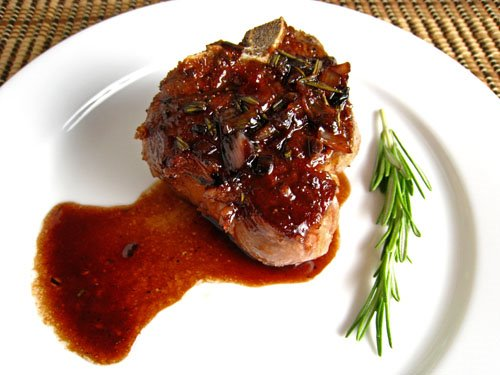

Balsamic Glazed Lamb Chops

This recipe was the first ever meal that ive made on my own, without any help from my parents or brothers. It symbolizes my independence as a man and my ability to cook.
Ingredients
- 4 lamb chops
- 1/4 cup balsamic vinegar
- 2 tablespoons olive oil
- 2 cloves garlic, minced
- 1 teaspoon dried rosemary
- Salt and pepper to taste
Instructions
- In a small bowl, whisk together the balsamic vinegar, olive oil, minced garlic, dried rosemary, salt, and pepper.
- In a hot pan over medium-high heat. Add the lamb chops and sear for 3-4 minutes on each side until browned.
- Reduce the heat to medium and pour the balsamic mixture over the lamb chops. Continue cooking for another 5-7 minutes, basting the chops with the sauce, until they reach your desired level of doneness.
- Remove the lamb chops from the pan and let them rest for a few minutes before serving. Drizzle any remaining sauce from the pan over the chops for extra flavor.